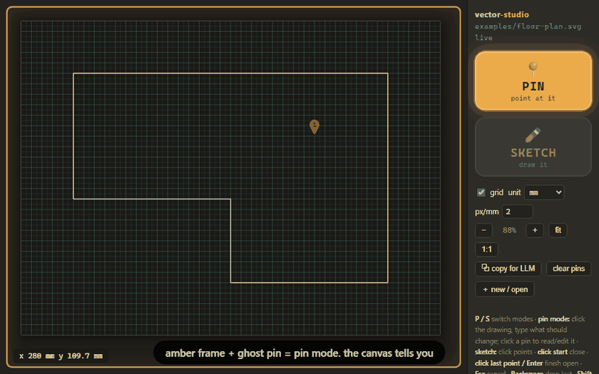
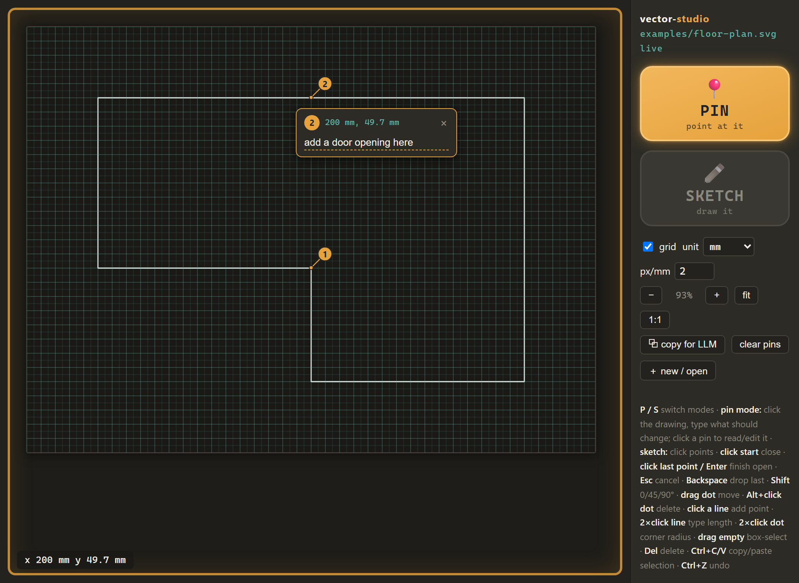
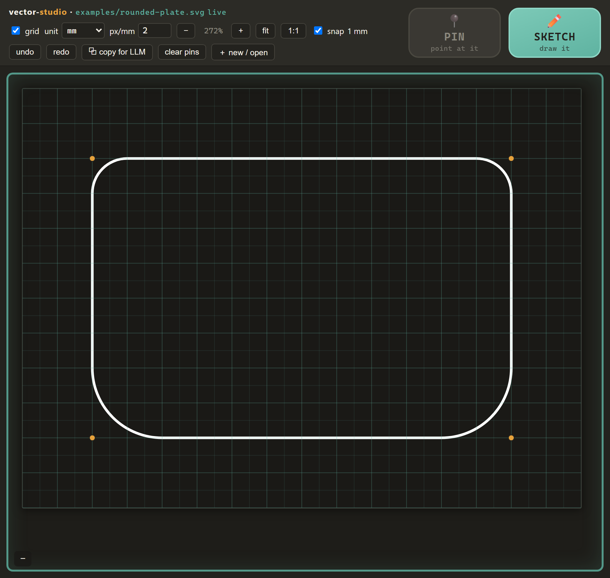

vector-studio LLM
Sketch it rough, pin what's wrong, let the LLM do the geometry — no pixels, no wasted tokens.

Why it's deliberately weak as a vector app
- Draw, don't describe. Rough geometry is faster to sketch than to put into words — click out a floor plan in seconds instead of writing "a room about 3 by 2 meters with a notch in the corner…".
- Pins instead of 50 tools. Click a spot, type what should change there. The pin replaces the tool palette; the LLM is the tools.
- The loop is text all the way down. The drawing is an SVG file; pins are a small JSON sidecar with exact mm coordinates. Your agent reads and edits a few KB of text — no screenshot round-trips.
Two modes, obvious at a glance
Amber frame = pin mode, teal frame = sketch mode — with a ghost preview of what your next click will do. The controls move between a right rail and a top bar to fit your window.


Quickstart
Two files, no build, no dependencies beyond Python's standard library. The tool never talks to an LLM itself — the filesystem is the interface, so any file-editing agent (Claude Code, Cursor, aider, a local model…) already works with it. That's also why there is no hosted demo: the whole point is your agent editing files on your disk.
git clone https://github.com/ryangadz/vector-studio-llm.git
cd vector-studio-llm
python serve.py # then open http://127.0.0.1:8103/viewer.html
Sketch something, drop a pin, then tell your agent to "check pins". Full docs, the agent contract, and examples are in the README.